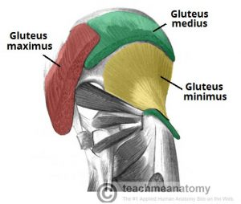
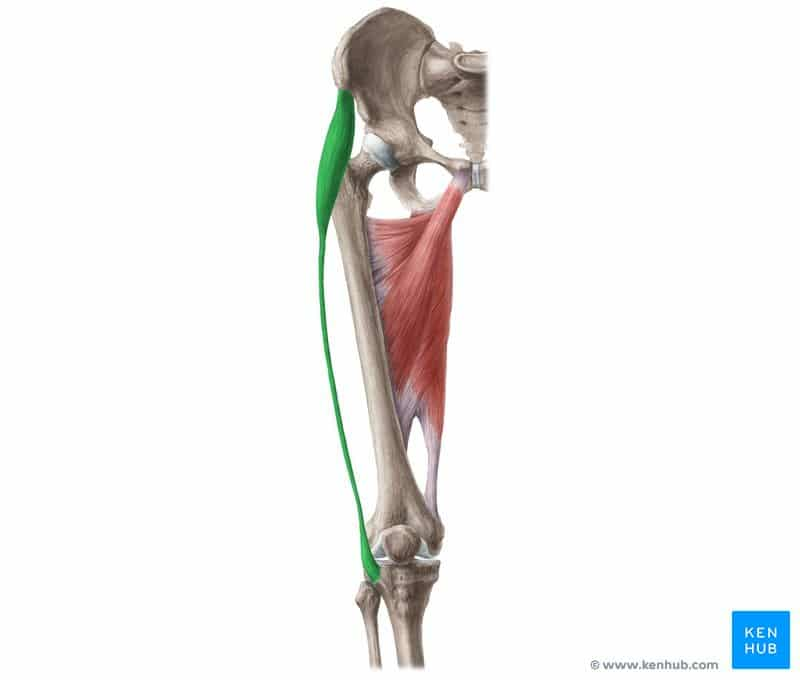
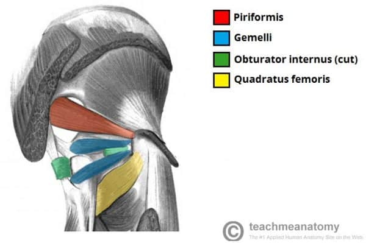
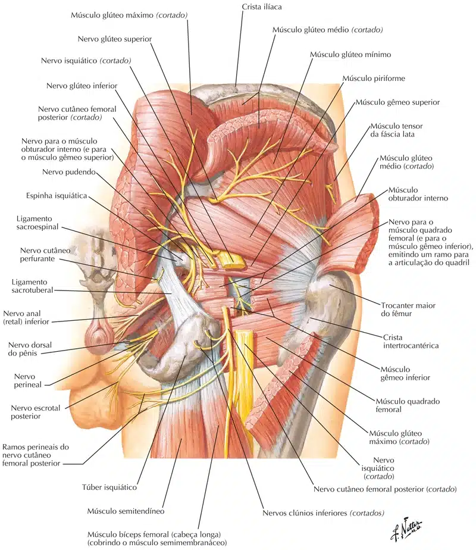

A região glútea é uma área anatômica localizada posteriormente à cintura pélvica, na extremidade proximal do fêmur.
Os músculos dessa região movem o membro inferior na articulação do quadril e podem ser divididos em dois grupos:
Camada superficial – Abdutores e extensores: grupo de grandes músculos que abduzem e estendem o fêmur.
Inclui o glúteo máximo, glúteo médio, glúteo mínimo e tensor da fáscia lata.
Camada profunda – Rotadores laterais profundos: grupo de músculos menores que atuam principalmente para girar lateralmente o fêmur.
Inclui o quadrado femoral, piriforme, gêmeo superior, gêmeo inferior e obturador interno.
Camada superficial
Abdutores e extensores
Glúteo máximo
Inserção Medial: Linha glútea posterior do íleo, sacro, cóccix e ligamento sacrotuberoso. Inserção Lateral: Trato íleotibial da fáscia lata e tuberosidade glútea do fêmur. Inervação: Nervo Glúteo Inferior (L5 – S2). Ação: Extensão e rotação lateral do quadril.

https://teachmeanatomy.info/
Glúteo médio
Inserção Superior: Face externa do íleo entre a crista ilíaca, linha glútea posterior e anterior. Inserção Inferior: Trocânter maior. Inervação: Nervo Glúteo Superior (L4 – S1). Ação: Abdução e rotação medial da coxa.
https://teachmeanatomy.info/
Glúteo mínimo
Inserção Superior: Asa ilíaca (entre linha glútea anterior e inferior). Inserção Inferior: Trocânter maior. Inervação: Nervo Glúteo Superior (L4 – S1). Ação: Abdução e rotação medial da coxa. As fibras anteriores realizam flexão do quadril.
https://teachmeanatomy.info/
Tensor da fáscia lata
Inserção Proximal: Crista ilíaca e EIAS. Inserção Distal: Trato íleo-tibial. Inervação: Nervo do Glúteo Superior (L4 – S1). Ação: Flexão, abdução e rotação medial do quadril e rotação lateral do joelho.

https://www.kenhub.com/
NETTER: Frank H. Netter Atlas De Anatomia Humana. 7 ed. Rio de Janeiro, Elsevier, 2021.
NETTER: Frank H. Netter Atlas De Anatomia Humana. 7 ed. Rio de Janeiro, Elsevier, 2021.
Camada profunda
Rotadores laterais profundos
Quadrado femoral
Inserção Medial: Tuberosidade isquiática. Inserção Lateral: Crista intertrocantérica. Inervação: Nervo para o músculo quadrado femural e gêmeo inferior (L4 – S1). Ação: Rotação lateral e adução da coxa.

https://teachmeanatomy.info/
Piriforme
Inserção Medial: Superfície pélvica do sacro e margem da incisura isquiática maior. Inserção Lateral: Trocânter maior. Inervação: Nervo para o músculo piriforme (S2). Ação: Abdução e rotação lateral da coxa.
https://teachmeanatomy.info/
Gêmeo superior
Inserção Medial: Espinha isquiática. Inserção Lateral: Trocânter maior. Inervação: Nervo para o músculo gêmeo superior (L5 – S2). Ação: Rotação lateral da coxa.
https://teachmeanatomy.info/
Gêmeo inferior
Inserção Medial: Tuberosidade isquiática. Inserção Lateral: Trocânter maior. Inervação: Nervo para o músculo gêmeo inferior e quadrado femural (L4 – S1). Ação: Rotação lateral da coxa.
https://teachmeanatomy.info/
Obturador interno
Inserção Medial: Face interna da membrana obturatória e ísquio. Inserção Lateral: Trocânter maior e fossa trocantérica do fêmur. Inervação: Nervo para o músculo obturatório interno (L5 – S2). Ação: Rotação lateral da coxa.
https://teachmeanatomy.info/

NETTER: Frank H. Netter Atlas De Anatomia Humana. 7 ed. Rio de Janeiro, Elsevier, 2021.